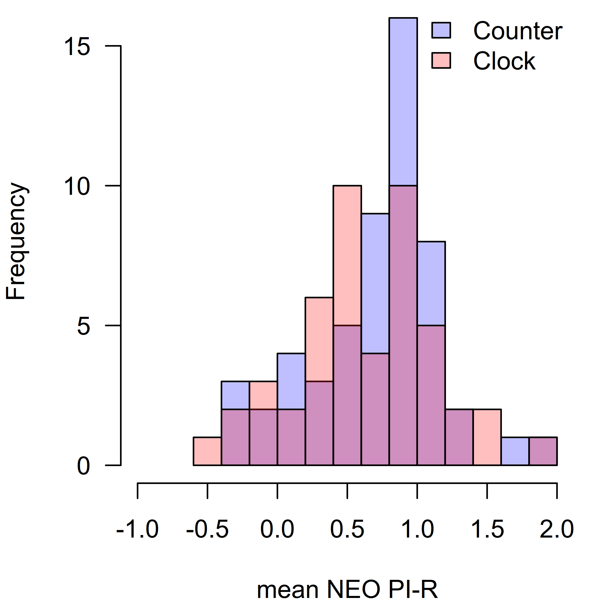
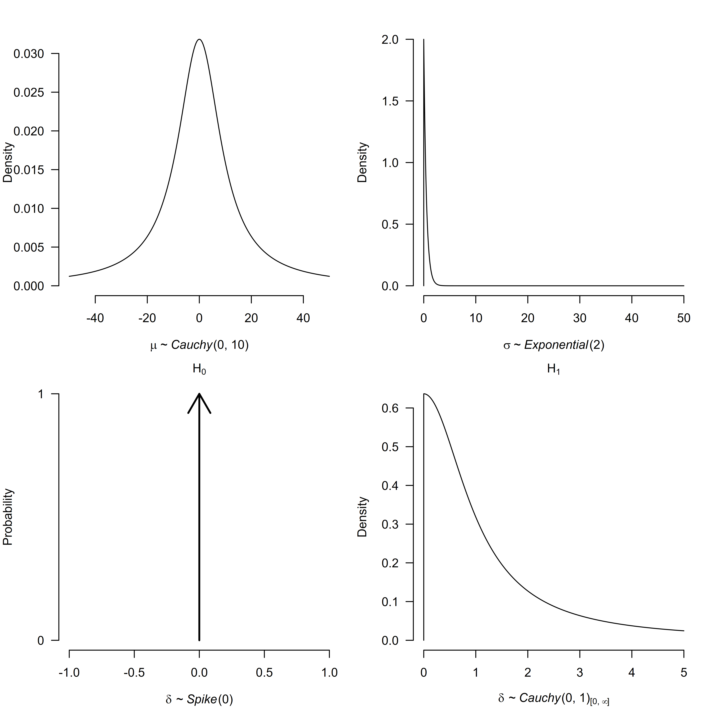

vignettes/ComparisonR.Rmd
ComparisonR.RmdBayesTools R package allows package developers and users to conveniently specify a wide variety of models. In this vignette, I show how to reproduce some commonly used models and compare the results to output from other, more specialized, R packages.
Bayesian two-sample t-test is one of the most commonly used tests. It
compares means of two independent groups and the underlying model is
usually defined as
\(x_i \sim
\text{Normal}(\mu - \frac{\alpha}{2}, \sigma^2), i =
1,\dots,N_x\),
\(y_i \sim
\text{Normal}(\mu + \frac{\alpha}{2}, \sigma^2), i =
1,\dots,N_y\).
where \(\mu\)
corresponds to the grand mean, \(\sigma\) to the grand standard deviation,
and \(\alpha\) corresponds to the total
effect. The standardized effect size, the usual quantity of interest,
\(\delta\) can be then obtained as
\(\delta = \frac{\alpha}{\sigma}\)
(Rouder et al., 2009).
To perform the test, we specify two competing hypotheses:
To illustrate the two-sample t-test specification with BayesTools, I use a data set from a replication study conducted by (Wagenmakers et al., 2015). Wagenmakers et al. (2015) replicated the 2nd experiment from a study by Topolinski & Sparenberg (2012) who claimed that clockwise movements induce psychological states of progression in time and increases orientation toward the future and novelty. In their second experiment, Topolinski & Sparenberg (2012) let 60 participants to rotate kitchen rolls either clock or counter-clock wise, inducing the progression in time, and increasing their mean score in NEO PI-R items measuring openness to experience t(58) = 2.21, p = 0.031, Cohen’s d = 0.58. In the replication study, Wagenmakers et al. (2015) collected data from 102 participants and found a \(\text{BF}_{0+}\) = 10.76 in the favor of null hypothesis of no effect against a positive effect in the direction of the original study.
First, we load the package, data set, and split the data set into the two groups.
library(BayesTools)
#>
#> Attaching package: 'BayesTools'
#> The following objects are masked from 'package:stats':
#>
#> sd, var
#> The following object is masked from 'package:grDevices':
#>
#> pdf
data("kitchen_rolls")
x <- kitchen_rolls$mean_NEO[kitchen_rolls$rotation == "counter"]
y <- kitchen_rolls$mean_NEO[kitchen_rolls$rotation == "clock"]
h1 <- hist(x, breaks = 15, plot = FALSE)
h2 <- hist(y, breaks = 15, plot = FALSE)
par(mar = c(4, 4, 0, 1))
plot(h1, col = rgb(0,0,1,1/4), xlim = c(-1, 2), ylim = c(0, 16), las = 1, main = "", xlab = "mean NEO PI-R")
plot(h2, col = rgb(1,0,0,1/4), add = TRUE)
legend("topright", legend = c("Counter", "Clock"), fill = c(rgb(0,0,1,1/4), rgb(1,0,0,1/4)), bty = "n")
I first specify the model likelihood using the JAGS modeling syntax. Note that JAGS uses mean and precision to define a normal distribution, therefore, I need to specify \(\sigma^-2\) as the second parameter. Otherwise, the syntax closely resembles the mathematical notation used to outline the two-sample t-test (notice the substitution of \(\delta\) in the place of \(\alpha\)). See JAGS user manual for more details about the syntax and supported distributions.
ttest_model <-
"model{
for(i in 1:Nx){
x[i] ~ dnorm(mu - delta*sigma/2, pow(sigma, -2))
}
for(i in 1:Ny){
y[i] ~ dnorm(mu + delta*sigma/2, pow(sigma, -2))
}
}
"Researchers familiar with specifying models in JAGS might notice that I did not specify the prior distribution for any of our parameters (\(\mu, \sigma, \delta\)). In fact, all operations related to prior distributions are handled automatically by the BayesTools package. Here, I specify two lists of prior distributions, the first one for the null hypothesis \(\mathcal{H}_0\) of no effect and second for the alternative hypothesis of a positive effect \(\mathcal{H}_+\). As in Wagenmakers et al. (2015), I use a point null hypothesis for the \(\delta\) for \(\mathcal{H}_0\) and a half Cauchy distribution with scale \(\sqrt{2}/2\) for the alternative hypothesis. Unfortunately, JAGS does not allow us to specify Jeffreys’ priors for the common mean \(\mu\) and standard deviation \(\sigma\), therefore I use a relative wide Cauchy prior distribution for the mean and an exponential distribution for the standard deviation, both of which have approximately the same shape as the Jeffreys’ priors in areas where the likelihood is the highest.\(^1\)
ttest_priors_H0 <- list(
mu = prior("cauchy", parameters = list(location = 0, scale = 10)),
sigma = prior("exponential", parameters = list(rate = 2)),
delta = prior("spike", parameters = list(location = 0))
)
ttest_priors_Hp <- list(
mu = prior("cauchy", parameters = list(location = 0, scale = 10)),
sigma = prior("exponential", parameters = list(rate = 2)),
delta = prior("cauchy", parameters = list(location = 0, scale = 1),
truncation = list(lower = 0, upper = Inf))
)I can visualize and check the prior distributions with the
plot() function.
par(mfrow = c(2, 2), mar = c(4, 4, 2, 1))
plot(ttest_priors_H0$mu, par_name = bquote(mu), xlim = c(-50, 50))
plot(ttest_priors_H0$sigma, par_name = bquote(sigma), xlim = c(0, 50))
plot(ttest_priors_H0$delta, par_name = bquote(delta),
xlim = c(-1, 1), main = bquote(H[0]))
plot(ttest_priors_Hp$delta, par_name = bquote(delta),
xlim = c(0, 5), main = bquote(H[1]))
The last step needed before actually fitting the models is specifying a list with the data set. Here, I need to pass both the observations for \(x\) and \(y\), but also the number of observations in each group, \(N_x\) and \(N_y\), since I used it the model syntax I specified earlier.
Then, I pass the arguments into the JAGS_fit() function
that wraps around the runjags R package (Denwood,
2016), specifying the prior distributions, preparing the starting
values, etc…
ttest_model_H0 <- JAGS_fit(
model_syntax = ttest_model,
data = ttest_data,
prior_list = ttest_priors_H0,
seed = 0
)
#> Loading required namespace: runjags
#> Loading required namespace: rjags
ttest_model_Hp <- JAGS_fit(
model_syntax = ttest_model,
data = ttest_data,
prior_list = ttest_priors_Hp,
seed = 1
) I can print the estimated model summary with
runjags_estimates_table() function.
runjags_estimates_table(ttest_model_Hp)
#> Mean SD lCI Median uCI error(MCMC) error(MCMC)/SD ESS R-hat
#> mu 0.681 0.048 0.585 0.681 0.774 0.00049 0.010 9784 1.000
#> sigma 0.488 0.035 0.425 0.486 0.562 0.00036 0.010 9246 1.000
#> delta 0.113 0.094 0.004 0.091 0.345 0.00139 0.015 4526 1.000To compute the Bayes factor in favor of \(\mathcal{H}_+\) over \(\mathcal{H}_0\), I need to first obtain the marginal likelihoods. The only additional step is specifying an R function that returns the log likelihood of the model. Here, instead of writing out the loops, I take advantage of the fact that summation on the log scale equals to multiplication on the original scale.
log_posterior <- function(parameters, data){
loglik_x <- sum(dnorm(
x = data[["x"]],
mean = parameters[["mu"]] - parameters[["delta"]] * parameters[["sigma"]] / 2,
sd = parameters[["sigma"]],
log = TRUE
))
loglik_y <- sum(dnorm(
x = data[["y"]],
mean = parameters[["mu"]] + parameters[["delta"]] * parameters[["sigma"]] / 2,
sd = parameters[["sigma"]],
log = TRUE
))
return(loglik_x + loglik_y)
}The function requires two arguments, parameters and
data, both of which are forwarded to it via the
JAGS_bridgesampling function that wraps around the bridge
sampling R package (Gronau et al., 2020),
specifying the marginal likelihood for prior distributions and taking
care of all required transformations etc…
marglik_model_H0 <- JAGS_bridgesampling(
fit = ttest_model_H0,
log_posterior = log_posterior,
data = ttest_data,
prior_list = ttest_priors_H0
)
marglik_model_Hp <- JAGS_bridgesampling(
fit = ttest_model_Hp,
log_posterior = log_posterior,
data = ttest_data,
prior_list = ttest_priors_Hp
)To obtain the resulting Bayes factor in favor of the null hypothesis,
I can use the bf() function from the bridgesampling R
package
bridgesampling::bf(marglik_model_H0, marglik_model_Hp)
#> Estimated Bayes factor in favor of marglik_model_H0 over marglik_model_Hp: 10.71767or specify a BayesTools model ensemble object that can be further inspected by a variety of functions.
models_list <- models_inference(list(
list(model = ttest_model_H0, marglik = marglik_model_H0, prior_weights = 1/2),
list(model = ttest_model_Hp, marglik = marglik_model_Hp, prior_weights = 1/2)
))
ensemble_info <- ensemble_inference(models_list, parameters = "delta", is_null_list = list("delta" = c(TRUE, FALSE)))
ensemble_inference_table(ensemble_info, "delta", BF01 = TRUE)
#> Models Prior prob. Post. prob. Exclusion BF
#> delta 1/2 0.500 0.085 10.718The corresponding results can be also obtained numerically with the
ttestBF() function from the BayesFactor R package (Morey et al., 2015).
BayesFactor_ttest <- BayesFactor::ttestBF(x = x, y = y, rscale = "wide", nullInterval = c(0, Inf))
BayesFactor_ttest
#> Bayes factor analysis
#> --------------
#> [1] Alt., r=1 0<d<Inf : 0.3058419 ±0%
#> [2] Alt., r=1 !(0<d<Inf) : 0.09296717 ±0%
#>
#> Against denominator:
#> Null, mu1-mu2 = 0
#> ---
#> Bayes factor type: BFindepSample, JZS
1/exp(BayesFactor_ttest@bayesFactor$bf[2])
#> [1] 10.75649This is of course a trivial example, however, it showcases flexibility of the BayesTools package. The prior distribution on the standardized effect size parameter \(\delta\) can be changed to any of the multitude of supported distributions without effecting rest of the code, allowing users and package developers to specify more customized tests.
\(^1\) Although the Jeffreys’ prior distributions integrate out from the numerical solution for the default Bayesian t-test/ANOVA, the prior distribution for sigma can influence the resulting Bayes factor in favor of the effect since it scales the standardized effect size coefficient.